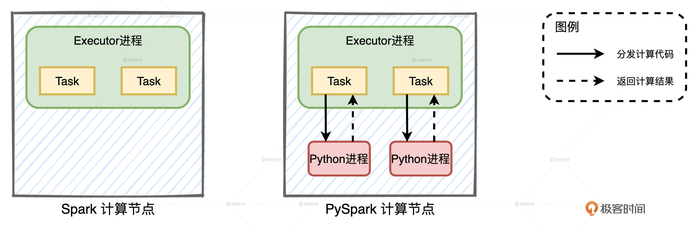
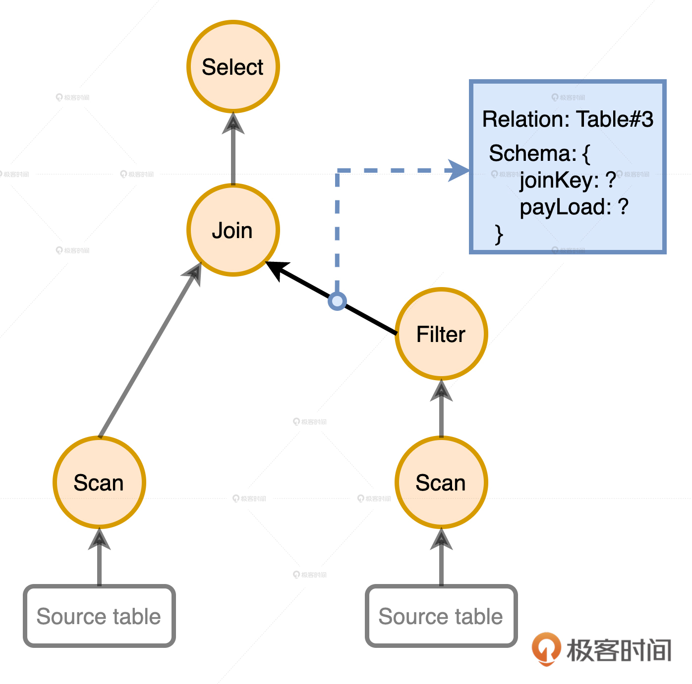
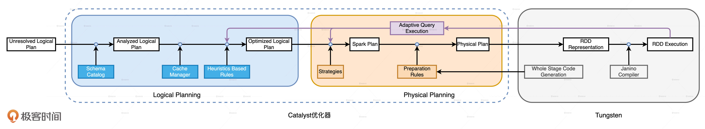
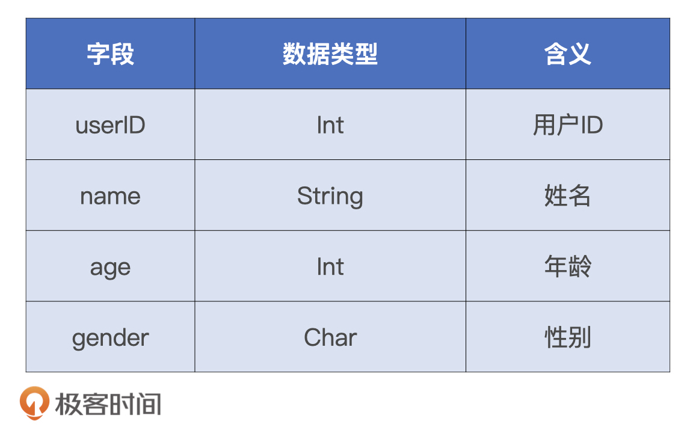
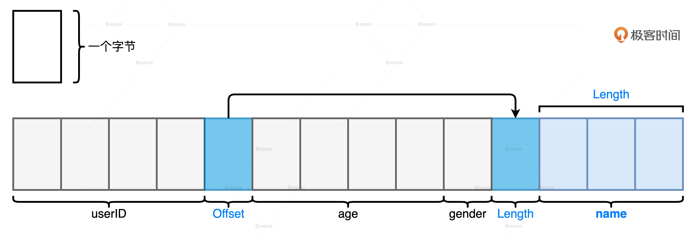
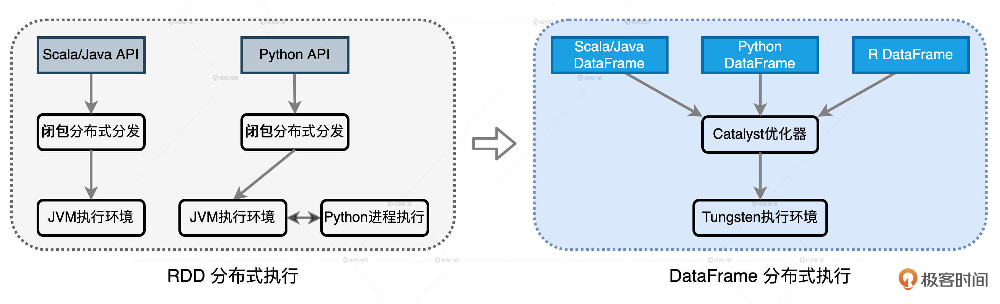

- 00 开篇词 Spark性能调优，你该掌握这些“套路”.md.html
- 01 性能调优的必要性：Spark本身就很快，为啥还需要我调优？.md.html
- 02 性能调优的本质：调优的手段五花八门，该从哪里入手？.md.html
- 03 RDD：为什么你必须要理解弹性分布式数据集？.md.html
- 04 DAG与流水线：到底啥叫“内存计算”？.md.html
- 05 调度系统：“数据不动代码动”到底是什么意思？.md.html
- 06 存储系统：空间换时间，还是时间换空间？.md.html
- 07 内存管理基础：Spark如何高效利用有限的内存空间？.md.html
- 08 应用开发三原则：如何拓展自己的开发边界？.md.html
- 09 调优一筹莫展，配置项速查手册让你事半功倍！（上）.md.html
- 10 调优一筹莫展，配置项速查手册让你事半功倍！（下）.md.html
- 11 为什么说Shuffle是一时无两的性能杀手？.md.html
- 12 广播变量（一）：克制Shuffle，如何一招制胜！.md.html
- 13 广播变量（二）：如何让Spark SQL选择Broadcast Joins？.md.html
- 14 CPU视角：如何高效地利用CPU？.md.html
- 15 内存视角（一）：如何最大化内存的使用效率？.md.html
- 16 内存视角（二）：如何有效避免Cache滥用？.md.html
- 17 内存视角（三）：OOM都是谁的锅？怎么破？.md.html
- 18 磁盘视角：如果内存无限大，磁盘还有用武之地吗？.md.html
- 19 网络视角：如何有效降低网络开销？.md.html
- 20 RDD和DataFrame：既生瑜，何生亮？.md.html
- 21 Catalyst逻辑计划：你的SQL语句是怎么被优化的？（上）.md.html
- 22 Catalyst物理计划：你的SQL语句是怎么被优化的（下）？.md.html
- 23 钨丝计划：Tungsten给开发者带来了哪些福报？.md.html
- 24 Spark 3.0（一）：AQE的3个特性怎么才能用好？.md.html
- 25 Spark 3.0（二）：DPP特性该怎么用？.md.html
- 26 Join Hints指南：不同场景下，如何选择Join策略？.md.html
- 27 大表Join小表：广播变量容不下小表怎么办？.md.html
- 28 大表Join大表（一）：什么是“分而治之”的调优思路？.md.html
- 29 大表Join大表（二）：什么是负隅顽抗的调优思路？.md.html
- 30 应用开发：北京市小客车（汽油车）摇号趋势分析.md.html
- 31 性能调优：手把手带你提升应用的执行性能.md.html
- Spark UI（上）深入解读Spark作业的“体检报告”.md.html
- Spark UI（下）：深入解读Spark作业的“体检报告”.md.html
- 期末考试 “Spark性能调优”100分试卷等你来挑战！.md.html
- 结束语 在时间面前，做一个笃定学习的人.md.html
- 捐赠
20 RDD和DataFrame：既生瑜，何生亮？
你好，我是吴磊。
从今天开始，我们进入Spark SQL性能调优篇的学习。在这一篇中，我会先带你学习Spark SQL已有的优化机制，如Catalyst、Tungsten这些核心组件，以及AQE、DPP等新特性。深入理解这些内置的优化机制，会让你在开发应用之初就有一个比较高的起点。然后，针对数据分析中的典型场景，如数据关联，我们再去深入探讨性能调优的方法和技巧。
今天这一讲，我们先来说说RDD和DataFrame的渊源。这也是面试的时候，面试官经常会问的。比如说：“Spark 3.0大版本发布，Spark SQL的优化占比将近50%；而像PySpark、Mllib和Streaming的优化占比都不超过10%，Graph的占比几乎可以忽略不计。这是否意味着Spark社区逐渐放弃了其他计算领域，只专注于数据分析？”
这个问题的标准答案是：“Spark SQL取代Spark Core，成为新一代的引擎内核，所有其他子框架如Mllib、Streaming和Graph，都可以共享Spark SQL的性能优化，都能从Spark社区对于Spark SQL的投入中受益。”不过，面试官可没有那么好对付，一旦你这么说，他/她可能会追问：“为什么需要Spark SQL这个新一代引擎内核？Spark Core有什么问题吗？Spark SQL解决了Spark Core的哪些问题？怎么解决的？”
面对这一连串“箭如雨发”的追问，你还能回答出来吗？接下来，我就从RDD的痛点说起，一步一步带你探讨DataFrame出现的必然性，Spark Core的局限性，以及它和Spark SQL的关系。
RDD之痛：优化空间受限
自从Spark社区在1.3版本发布了DataFrame，它就开始代替RDD，逐渐成为开发者的首选。我们知道，新抽象的诞生一定是为了解决老抽象不能搞定的问题。那么，这些问题都是什么呢？下面，我们就一起来分析一下。
在RDD的开发框架下，我们调用RDD算子进行适当的排列组合，就可以很轻松地实现业务逻辑。我把这些使用频繁的RDD算子总结到了下面的表格里，你可以看一看。
表格中高亮显示的就是RDD转换和聚合算子，它们都是高阶函数。高阶函数指的是形参包含函数的函数，或是返回结果包含函数的函数。为了叙述方便，我们把那些本身是高阶函数的RDD算子，简称“高阶算子”。
对于这些高阶算子，开发者需要以Lambda函数的形式自行提供具体的计算逻辑。以map为例，我们需要明确对哪些字段做映射，以什么规则映射。再以filter为例，我们需要指明以什么条件在哪些字段上过滤。
但这样一来，Spark只知道开发者要做map、filter，但并不知道开发者打算怎么做map和filter。也就是说，在RDD的开发模式下，Spark Core只知道“做什么”，而不知道“怎么做”。这会让Spark Core两眼一抹黑，除了把Lambda函数用闭包的形式打发到Executors以外，实在是没有什么额外的优化空间。
对于Spark Core来说，优化空间受限最主要的影响，莫过于让应用的执行性能变得低下。一个典型的例子，就是相比Java或者Scala，PySpark实现的应用在执行性能上相差悬殊。原因在于，在RDD的开发模式下，即便是同一个应用，不同语言实现的版本在运行时也会有着天壤之别。

当我们使用Java或者Scala语言做开发时，所有的计算都在JVM进程内完成，如图中左侧的Spark计算节点所示。
而当我们在PySpark上做开发的时候，只能把由RDD算子构成的计算代码，一股脑地发送给Python进程。Python进程负责执行具体的脚本代码，完成计算之后，再把结果返回给Executor进程。由于每一个Task都需要一个Python进程，如果RDD的并行度为#N，那么整个集群就需要#N个这样的Python进程与Executors交互。不难发现，其中的任务调度、数据计算和数据通信等开销，正是PySpark性能低下的罪魁祸首。
DataFrame应运而生
针对优化空间受限这个核心问题，Spark社区痛定思痛，在2013年在1.3版本中发布了DataFrame。那么，DataFrame的特点是什么，它和RDD又有什么不同呢？
首先，用一句话来概括，DataFrame就是携带数据模式（Data Schema）的结构化分布式数据集，而RDD是不带Schema的分布式数据集。因此，从数据表示（Data Representation）的角度来看，是否携带Schema是它们唯一的区别。带Schema的数据表示形式决定了DataFrame只能封装结构化数据，而RDD则没有这个限制，所以除了结构化数据，它还可以封装半结构化和非结构化数据。
其次，从开发API上看，RDD算子多是高阶函数，这些算子允许开发者灵活地实现业务逻辑，表达能力极强。
DataFrame的表达能力却很弱。一来，它定义了一套DSL（Domain Specific Language）算子，如select、filter、agg、groupBy等等。由于DSL语言是为解决某一类任务而专门设计的计算机语言，非图灵完备，因此，语言表达能力非常有限。二来，DataFrame中的绝大多数算子都是标量函数（Scalar Functions），它们的形参往往是结构化的数据列（Columns），表达能力也很弱。
你可能会问：“相比RDD，DataFrame的表示和表达能力都变弱了，那它是怎么解决RDD优化空间受限的核心痛点呢？”
当然，仅凭DataFrame在API上的改动就想解决RDD的核心痛点，比登天还难。DataFrame API最大的意义在于，它为Spark引擎的内核优化打开了全新的空间。
首先，DataFrame中Schema所携带的类型信息，让Spark可以根据明确的字段类型设计定制化的数据结构，从而大幅提升数据的存储和访问效率。其次，DataFrame中标量算子确定的计算逻辑，让Spark可以基于启发式的规则和策略，甚至是动态的运行时信息去优化DataFrame的计算过程。
Spark SQL智能大脑
那么问题来了，有了DataFrame API，负责引擎内核优化的那个幕后英雄是谁？为了支持DataFrame开发模式，Spark从1.3版本开始推出Spark SQL。Spark SQL的核心组件有二，其一是Catalyst优化器，其二是Tungsten。关于Catalyst和Tungsten的特性和优化过程，我们在后面的两讲再去展开，今天这一讲，咱们专注在它们和DataFrame的关系。
Catalyst：执行过程优化
我们先来说说Catalyst的优化过程。当开发者通过Actions算子触发DataFrame的计算请求时，Spark内部会发生一系列有趣的事情。
首先，基于DataFrame确切的计算逻辑，Spark会使用第三方的SQL解析器ANTLR来生成抽象语法树（AST，Abstract Syntax Tree）。既然是树，就会有节点和边这两个基本的构成元素。节点记录的是标量算子（如select、filter）的处理逻辑，边携带的是数据信息：关系表和数据列，如下图所示。这样的语法树描述了从源数据到DataFrame结果数据的转换过程。

在Spark中，语法树还有个别名叫做“Unresolved Logical Plan”。它正是Catalyst优化过程的起点。之所以取名“Unresolved”，是因为边上记录的关系表和数据列仅仅是一些字符串，还没有和实际数据对应起来。举个例子，Filter之后的那条边，输出的数据列是joinKey和payLoad。这些字符串的来源是DataFrame的DSL查询，Catalyst并不确定这些字段名是不是有效的，更不知道每个字段都是什么类型。
因此，Catalyst做的第一步优化，就是结合DataFrame的Schema信息，确认计划中的表名、字段名、字段类型与实际数据是否一致。这个过程也叫做把“Unresolved Logical Plan”转换成“Analyzed Logical Plan”。

基于解析过后的“Analyzed Logical Plan”，Catalyst才能继续做优化。利用启发式的规则和执行策略，Catalyst最终把逻辑计划转换为可执行的物理计划。总之，Catalyst的优化空间来源DataFrame的开发模式。
Tungsten：数据结构优化
说完Catalyst，我接着再来说说Tungsten。在开发原则那一讲，我们提到过Tungsten使用定制化的数据结构Unsafe Row来存储数据，Unsafe Row的优点是存储效率高、GC效率高。Tungsten之所以能够设计这样的数据结构，仰仗的也是DataFrame携带的Schema。Unsafe Row我们之前讲过，这里我再带你简单回顾一下。

Tungsten是用二进制字节序列来存储每一条用户数据的，因此在存储效率上完胜Java Object。比如说，如果我们要存储上表中的数据，用Java Object来存储会消耗100个字节数，而使用Tungsten仅需要不到20个字节，如下图所示。

但是，要想实现上图中的二进制序列，Tungsten必须要知道数据条目的Schema才行。也就是说，它需要知道每一个字段的数据类型，才能决定在什么位置安放定长字段、安插Offset，以及存放变长字段的数据值。DataFrame刚好能满足这个前提条件。
我们不妨想象一下，如果数据是用RDD封装的，Tungsten还有可能做到这一点吗？当然不可能。这是因为，虽然RDD也带类型，如RDD[Int]、RDD[(Int, String)]，但如果RDD中携带的是开发者自定义的数据类型，如RDD[User]或是RDD[Product]，Tungsten就会两眼一抹黑，完全不知道你的User和Product抽象到底是什么。成也萧何、败也萧何，RDD的通用性是一柄双刃剑，在提供开发灵活性的同时，也让引擎内核的优化变得无比困难。
总的来说，基于DataFrame简单的标量算子和明确的Schema定义，借助Catalyst优化器和Tungsten，Spark SQL有能力在运行时构建起一套端到端的优化机制。这套机制运用启发式的规则与策略，以及运行时的执行信息，将原本次优、甚至是低效的查询计划转换为高效的执行计划，从而提升端到端的执行性能。因此，在DataFrame的开发框架下，不论你使用哪种开发语言，开发者都能共享Spark SQL带来的性能福利。

最后，我们再来回顾最开始提到的面试题：“从2.0版本至今，Spark对于其他子框架的完善与优化，相比Spark SQL占比很低。这是否意味着，Spark未来的发展重心是数据分析，其他场景如机器学习、流计算会逐渐边缘化吗？”
最初，Spark SQL确实仅仅是运行SQL和DataFrame应用的子框架，但随着优化机制的日趋完善，Spark SQL逐渐取代Spark Core，演进为新一代的引擎内核。到目前为止，所有子框架的源码实现都已从RDD切换到DataFrame。因此，和PySpark一样，像Streaming、Graph、Mllib这些子框架实际上都是通过DataFrame API运行在Spark SQL之上，它们自然可以共享Spark SQL引入的种种优化机制。
形象地说，Spark SQL就像是Spark的智能大脑，凡是通过DataFrame这双“眼睛”看到的问题，都会经由智能大脑这个指挥中心，统筹地进行分析与优化，优化得到的行动指令，最终再交由Executors这些“四肢”去执行。
小结
今天，我们围绕RDD的核心痛点，探讨了DataFrame出现的必然性，Spark Core的局限性，以及它和Spark SQL的关系，对Spark SQL有了更深刻的理解。
RDD的核心痛点是优化空间有限，它指的是RDD高阶算子中封装的函数对于Spark来说完全透明，因此Spark对于计算逻辑的优化无从下手。
相比RDD，DataFrame是携带Schema的分布式数据集，只能封装结构化数据。DataFrame的算子大多数都是普通的标量函数，以消费数据列为主。但是，DataFrame更弱的表示能力和表达能力，反而为Spark引擎的内核优化打开了全新的空间。
根据DataFrame简单的标量算子和明确的Schema定义，借助Catalyst优化器和Tungsten，Spark SQL有能力在运行时，构建起一套端到端的优化机制。这套机制运用启发式的规则与策略和运行时的执行信息，将原本次优、甚至是低效的查询计划转换为高效的执行计划，从而提升端到端的执行性能。
在DataFrame的开发模式下，所有子框架、以及PySpark，都运行在Spark SQL之上，都可以共享Spark SQL提供的种种优化机制，这也是为什么Spark历次发布新版本、Spark SQL占比最大的根本原因。
每日一练
- Java Object在对象存储上为什么会有比较大的开销？JVM需要多少个字节才能存下字符串“abcd”？
- 在DataFrame的开发框架下， PySpark中还有哪些操作是“顽固分子”，会导致计算与数据在JVM进程与Python进程之间频繁交互？(提示：参考RDD的局限性，那些对Spark透明的计算逻辑，Spark是没有优化空间的)
期待在留言区看到你的思考和答案，我们下一讲见！
© 2019 - 2023 Liangliang Lee. Powered by gin and hexo-theme-book.